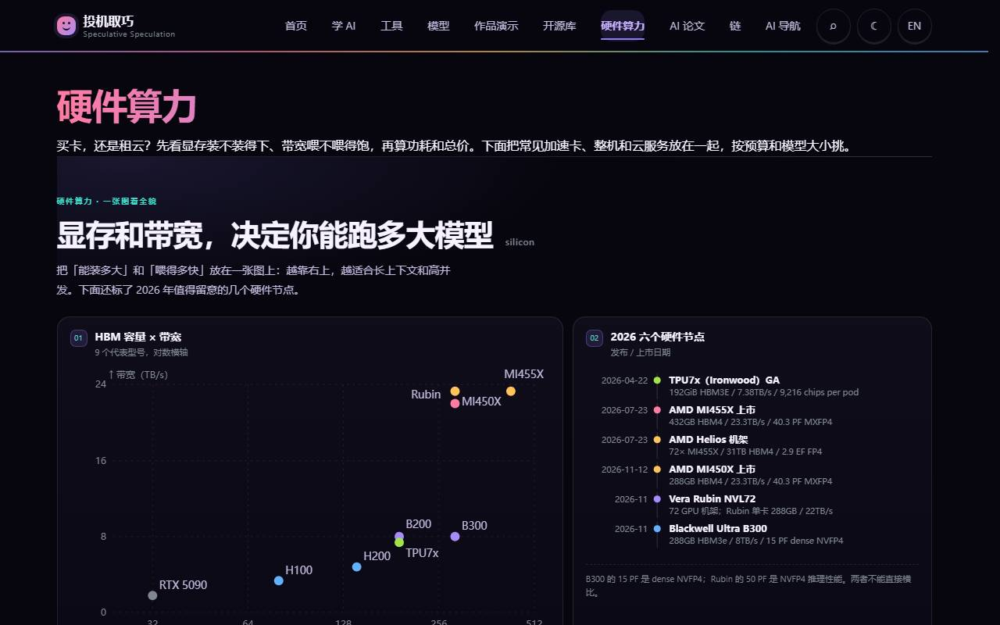

SPECUL · 十个站，一张路网SPECUL · Ten sites, one network
你今天
想干什么？What do you
want to get done?
想弄懂一个词、找件能用的工具、挑个能跑的模型、看别人做出来的东西——十个站各管一段，点进去就是具体页面。Need a term, a working tool, a model you can run, or something someone built? Ten sites each cover one part; every link lands on a specific page.
10 个站sites 1,777 个页面pages 2,409 条可搜记录search records
01 · 先找入口01 · Find the door
你现在的情况，对应一个具体页面Your situation maps to one page
不用记站名。找到最像你的那一行，点“先打开这一页”。No need to memorise site names. Find your row and open the page in the third column.
| 你现在的情况Your situation | 去哪个站Which site | 先打开这一页Open this page | 你能拿到What you get |
|---|---|---|---|
| 词都看不懂，术语太多The terms make no sense | 学 AILearn | 概念地图Concept map → | 先弄清常用词之间的关系See how the common terms connect |
| 手里有件活，今天要交A job is due today | 工具Tools | 办公与写作Office & writing → | 按任务挑工具，看限制与收费Pick by task; check limits and pricing |
| 想把模型跑在自己机器上Run a model on your own machine | 模型Models | 端侧部署指南Edge deployment → | 先算显存，再决定量化档位Work out VRAM first, then the quant tier |
| 要买卡，或租算力Buying a GPU, or renting compute | 硬件算力Compute | 云 GPU 比价Compare cloud GPU prices → | 知道买还是租，按小时怎么算Whether to buy or rent, and the hourly maths |
| 想读原始论文，不要二手结论Read the source paper, not a summary | AI 论文Papers | 方法谱系Method lineage → | 从综述到单篇，带证据边界From overview to single papers, with evidence limits |
| 想拿代码，自己搭一套Take code and build it yourself | 开源库OSS | 本地推理场景Local inference → | 找到能跑的仓库，先看许可Find a runnable repo; start with the licence |
| 想查链上凭证与支付Looking into on-chain credentials or payments | 链Chain | 核验路径Verification path → | 分清概念、协议与能做的事Separate concepts, protocols and what they can do |
| 只想逛逛，找点灵感Just browsing for ideas | 作品演示Demos | 全部作品All works → | 先看真作品，再回头补原理See real pieces first, then fill in the theory |
表里都是站内页；如果都不像你，直接搜全站。Every link stays on Specul. If none fits, search all ten sites.
02 · 十个站，十扇门02 · Ten sites, ten doors
先看每一站长什么样See what each site actually looks like
截图摄于 2026-11-22，是各站首页的真实样子；下面的数字是现在站里的内容量。Captured 22 Nov 2026. The thumbnails are the real homepages; the numbers are what each site holds now.

06把十个站的概念、工具、模型、论文、作品与站外目录一起搜一遍。Search concepts, tools, models, papers, works and the off-site directory in one go.
搜 2,409 条记录 →Search 2,409 records →03 · 按手里的活03 · By the job in hand
十六个常见任务，直接跳到跨站路线Sixteen common jobs, each with a cross-site path
每条路线把“用什么、怎么做、哪里会翻车”串起来。点一条，按顺序走。Each path connects what to use, how to do it and where it breaks. Pick one and follow it in order.
04 · 先看真的做出来04 · See what people actually made
六件作品，点开就能跑Six pieces that run when you open them
都来自作品演示站。先看结果，再决定要不要回头补原理。All from the Playground. See the result first, then decide whether to go back for the theory.


05 · 想读长一点05 · If you want a longer read
三篇，讲清三条正在发生的变化Three pieces on three changes underway
全站地图Site map2026 更新2026 updates这个站怎么做的How this site is made内容怎么选How we choose content